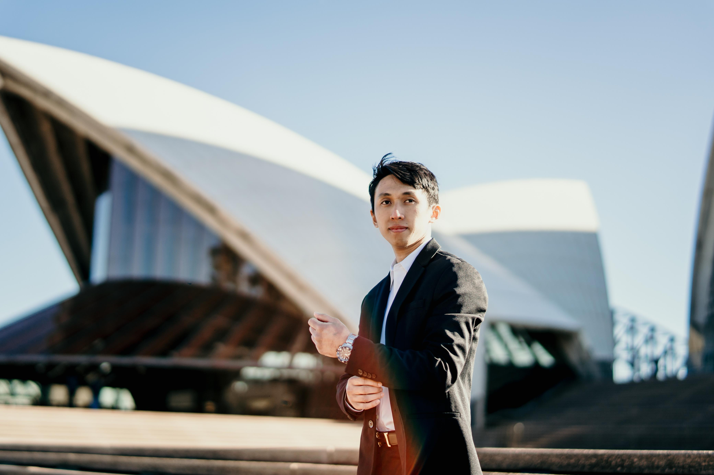

Business Analytics Student at the University of Canterbury
Helping organizations make better decisions through data, technology, and leadership.

I'm a Business Analytics student at the University of Canterbury with a passion for solving problems where data, technology, and people meet.
From building dashboards to leading multimedia teams and serving in the community, I bring a data-driven mindset paired with real leadership experience. I enjoy translating messy information into clear insights that help organizations move forward.
Roles where I've grown through leadership, service, and hands-on work.
Lead the multimedia team for live services and events — directing visuals, managing AV systems, editing content, and training new volunteers to deliver smooth productions.
Support and guide fellow students through the Tuakana mentoring programme, helping them navigate university life, build confidence, and stay on track academically.
Represent Indonesian culture at university and community events — fostering cross-cultural understanding and helping international students feel welcomed and connected.
Supported event operations and crowd management, ensuring smooth attendee flow and assisting staff in securing key areas during a major sporting event.
Where I put analytics and technology into practice.
An interactive analytics dashboard transforming raw operational data into clear, decision-ready visuals — tracking key metrics and trends at a glance.
A Python project for cleaning, exploring, and visualizing datasets — turning messy spreadsheets into structured insights and repeatable analysis workflows.
The technologies I use to analyze, build, and communicate.
Impact stories that shaped how I lead and serve.
Took ownership of live production for weekly services — coordinating a volunteer team, mentoring newcomers, and delivering reliable visuals and AV under real-time pressure.
Guided peers through the challenges of university life, sharing strategies, encouragement, and support to help them grow in confidence and succeed.
Represented Indonesian culture and helped international students feel at home — building connection and belonging across a diverse community.
Contributed to environmental projects and major events — showing up consistently to give back and support the people around me.